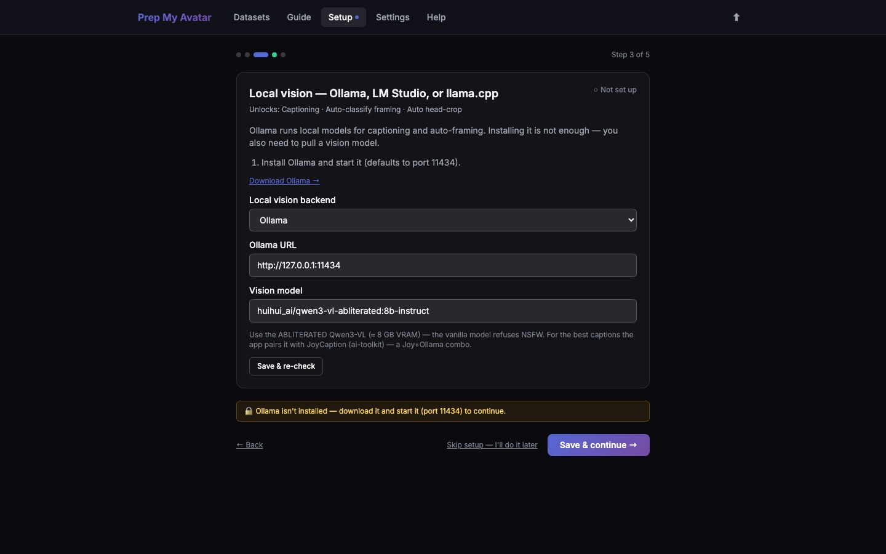

First run · 4 of 21
Step 4: Configure local vision
Local vision can classify your photos, map coverage, and write first-draft captions without sending those photos to a remote captioning service. You may use Ollama, LM Studio, or llama.cpp.

Before you begin
Each choice needs a running local server and a vision-capable, or “multimodal,” model. A text-only model cannot inspect images.
The local-vision capability is required to advance once you enter Setup. If you do not want to configure it now, use the wizard's global Skip setup — I'll do it later action. That exits Setup and opens Datasets; you can configure local vision later from Setup or Settings.
Do this
- On Step 3 of 5 — Local vision, open Local vision backend.
- Choose one backend:
- Ollama: install and start Ollama, keep the default URL unless you changed it, then pull the model offered by the wizard.
- LM Studio: start its local server, load a vision model, and use its OpenAI-compatible URL, normally
http://127.0.0.1:1234/v1. - llama.cpp: start
llama-serverwith a vision model and projector, then use its OpenAI-compatible URL, normallyhttp://127.0.0.1:8080/v1.
- Enter the exact loaded model identifier in the vision model field.
- Select Save & re-check.
- Correct the URL or loaded model if the check fails, then re-check.
- Select Save & continue →.
If you want to work without automatic analysis and captioning, select Skip setup — I'll do it later instead of trying to continue from this screen. Manual photo classification and caption editing remain available.
LM Studio: exact setup
LM Studio includes a llama.cpp-based inference engine, but Prep My Avatar connects to LM Studio's local OpenAI-compatible HTTP server rather than to the chat UI itself.
- In LM Studio, open My Models and select an installed model whose Capabilities include Vision. If necessary, use Model Search to download one first.
- Select Load Model, keep or set an API Identifier, and wait until the model shows READY. The identifier used on this Mac was
google/gemma-4-12b-qat. - Open Developer → Local Server and turn the server switch on. Keep it local unless another device must connect; the normal status is Reachable at:
http://127.0.0.1:1234. - In Prep My Avatar, choose LM Studio and enter:
- OpenAI-compatible URL:
http://127.0.0.1:1234/v1 - Vision model: the exact API identifier shown beside the loaded model, for example
google/gemma-4-12b-qat
- OpenAI-compatible URL:
- Select Save & re-check. A successful check says LM Studio is running and the configured vision model is loaded.
On a Mac, open -a "LM Studio" opens the app. After loading the vision model, start port 1234 from Developer → Local Server, or run lms server start --port 1234 in Terminal. The session detail shows both commands and the exact configured model identifier.
For the other backends, the session detail shows ollama serve plus the exact ollama pull … command, or a complete llama-server command template with the model, projector, host, and port arguments.
Keep LM Studio open, the model loaded, and the Local Server switch on while Prep My Avatar is using local vision. You do not need to start a separate llama-server process when using LM Studio.
If the page says LM Studio is not reachable, check the server switch and port first. If it is reachable but the model check fails, copy the model's API identifier from LM Studio and make sure the selected model is marked Vision.
You are finished when
The page says the selected backend is running and its vision model is loaded, then the wizard shows Quality tools — ML extras. If you used the global Setup skip, Datasets opens instead.